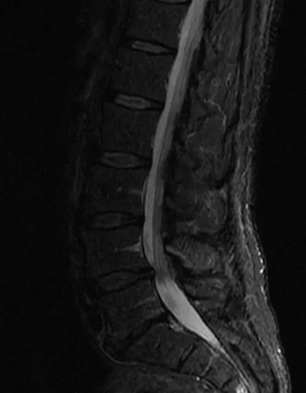
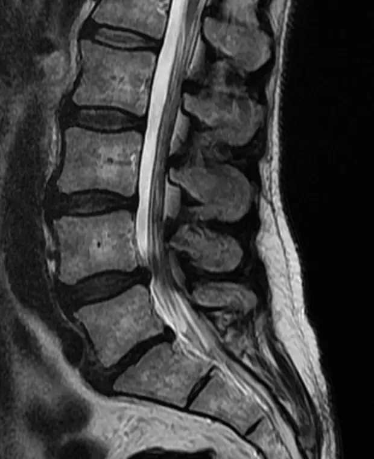
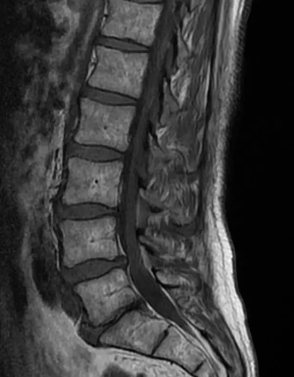
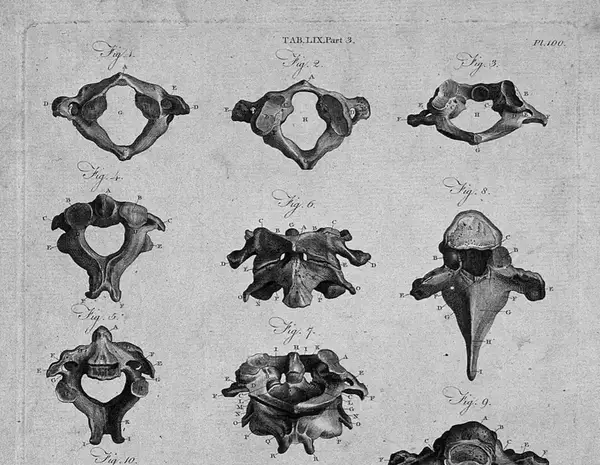
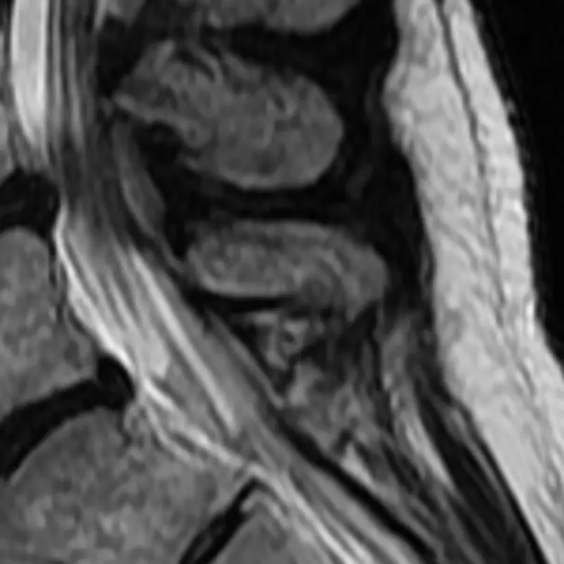
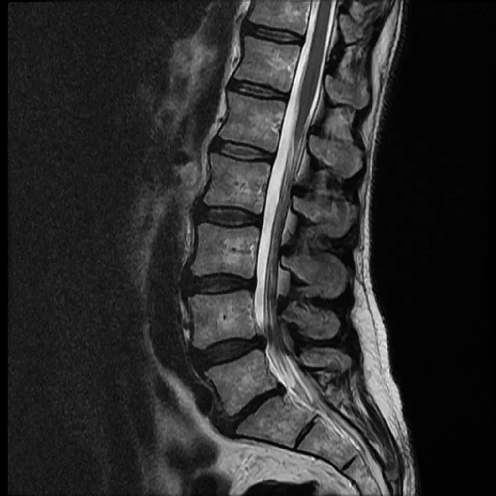

Zweitmeinung vor der OP

Ihnen wurde eine Operation empfohlen? Sie erhalten eine unabhängige Einschätzung, bevor Sie entscheiden.
Dr. med. Christoph Manicke, Neurochirurg in Kiel. Unabhängige Beratung vor und nach Operationen an der Wirbelsäule.
Termin vereinbaren: 0172 6347706
Eine Operation an der Wirbelsäule lässt sich nicht zurücknehmen. Bevor Sie zustimmen, sollten Sie wissen, was sie leisten kann und welche Wege es sonst gibt.
„Ich berate Sie zu allen Erkrankungen auf dem neurochirurgischen Fachgebiet mit dem Schwerpunkt Wirbelsäulenerkrankungen.
Sie werden ausführlich über das konservative und operative Behandlungsspektrum informiert.“
Dr. med. Christoph Manicke
Alle Erkrankungen des neurochirurgischen Fachgebiets, mit dem Schwerpunkt Wirbelsäule.

Ihnen wurde eine Operation empfohlen? Sie erhalten eine unabhängige Einschätzung, bevor Sie entscheiden.

Auch nach einer bereits durchgeführten Operation ist eine Beratung möglich.

Sie lernen das ganze Behandlungsspektrum kennen, nicht nur den Eingriff.

Bandscheibenvorfall, Spinalkanalstenose, Wirbelgleiten und weitere Erkrankungen der Nerven und Wirbel.
Drei Schritte, vom ersten Anruf bis zu einer klaren Einschätzung.

Termin nach Vereinbarung unter 0172 6347706 oder per E-Mail.
MRT- oder CT-Bilder, Befunde, die OP-Empfehlung und Ihre Medikamentenliste.

Ein gemeinsamer Blick auf Bilder und Beschwerden, dann eine klare Einschätzung, was Sie erwarten können.
Burgstraße 2 in der Kieler Innenstadt, zwischen Altem Markt und Schloss. Die Praxis liegt im 4. Stock und ist mit dem Aufzug erreichbar.
Dr. med. Christoph Manicke ist Neurochirurg mit dem Schwerpunkt Wirbelsäulenerkrankungen.
„Liebe Patientin, lieber Patient, ich freue mich, Sie in meiner Praxis in Kiel begrüßen zu dürfen!“

Die Praxis ist eine Privatpraxis für privat Versicherte und Selbstzahler. Gesetzlich Versicherte können als Selbstzahler kommen.
Termine gibt es nach Vereinbarung, telefonisch unter 0172 6347706 oder per E-Mail an christoph.manicke@gmx.de. Eine Online-Buchung gibt es nicht.
Abgerechnet wird nach der Gebührenordnung für Ärzte (GOÄ). Ob Ihre Versicherung die Kosten übernimmt, klären Sie am besten vorher mit ihr.
Ihre aktuellen MRT- oder CT-Bilder auf CD oder als Link, Arztbriefe und Befunde, die schriftliche OP-Empfehlung, falls es eine gibt, und eine Liste Ihrer Medikamente.
Ja. Auch nach einer bereits durchgeführten Operation ist eine Beratung möglich, etwa wenn Beschwerden geblieben oder neu aufgetreten sind.
Beide behandeln die Wirbelsäule. Die Neurochirurgie kommt vom Nervensystem her: Sie ist dort gefragt, wo Nervenwurzeln oder Rückenmark bedrängt werden.
Die Praxis liegt im 4. Stock der Burgstraße 2 und ist mit einem Aufzug erreichbar.
Bitte senden Sie Gesundheitsdaten nicht unverschlüsselt per E-Mail. Sprechen Sie am Telefon ab, wie Ihre Unterlagen am besten zur Praxis kommen.


Rund um die Burgstraße: Alter Markt, Schloss und Förde
Wählen Sie Ihr Anliegen. Ihr E-Mail-Programm öffnet sich mit einer fertigen Nachricht, die Sie nur noch abschicken.
Bitte hängen Sie keine Befunde an.
Lieber sprechen? 0172 6347706